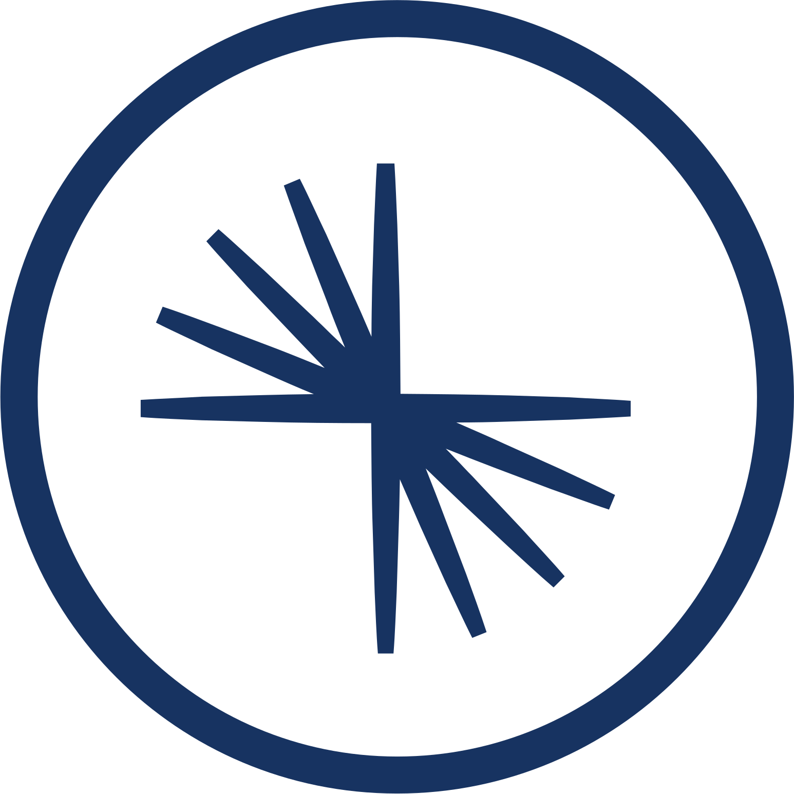
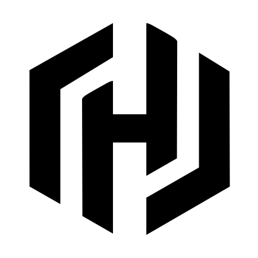
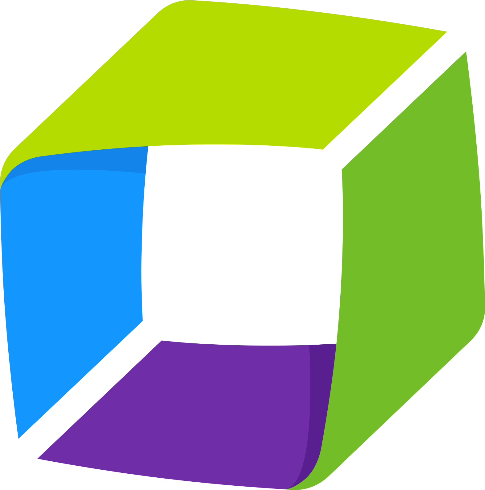

You have tried it. Pulled an MCP server from a GitHub repo, wrestled it into a container, sorted out authentication yourself and hoped it would hold up in production. That is the state of Model Context Protocol (MCP) adoption in the enterprise today: promising protocol, painful deployment.
Red Hat OpenShift AI 3.4, part of the Red Hat AI portfolio, takes a different approach. We are introducing the MCP Catalog in Developer Preview, a curated catalog of MCP servers that you can discover, deploy and manage directly on Red Hat OpenShift. It ships pre-loaded with MCP servers from Red Hat, technology partners and the open source community, and we are actively adding more.
Try Red Hat OpenShift AI to explore the MCP Catalog yourself.
This is not a static listing. Every MCP server in the catalog goes from discovery to running on your cluster, with lifecycle management and runtime connectivity built in. From there, it becomes consumable in gen AI studio, the interface in Red Hat OpenShift AI where you build and test AI applications. This is the beginning of the enterprise MCP ecosystem we are building.
The MCP Catalog: from discovery to deployment
Until now, the AI Hub in Red Hat OpenShift AI UI was focused on models. With 3.4, MCP servers join the catalog as first class citizens. It is also the first step toward a broader AI asset surface that will expand in upcoming releases.
Most MCP catalogs available today, including Smithery, Docker MCP Catalog and the official MCP registry, are discovery surfaces. They help you find servers, but deployment, security and lifecycle management are your problem. You download a container image of unknown provenance, configure it manually and hope the next update does not break your workload.
The MCP Catalog in Red Hat OpenShift AI closes that gap. When you browse the catalog in the AI Hub, you are looking at MCP servers that have been validated for enterprise deployment: production-grade connectivity (streamable HTTP transport), on-cluster hosting and container images built on Red Hat Universal Base Image and scanned for vulnerabilities. When you select a server, the MCP Lifecycle Operator deploys it on your cluster, creating the Kubernetes resources and exposing the service. From there, the MCP Gateway handles runtime connectivity, providing identity-aware routing and per-tool metrics so your platform team knows exactly which agents are calling which tools.
The result is a governed path from discovery to deployment to consumption. Select, deploy, connect.

MCP servers ready to use
The catalog ships with three tiers of MCP servers, each addressing real enterprise workflows. Here is what is available today.
Three Red Hat MCP servers connect your AI agents directly to the platforms you already run:
 Red Hat OpenShift: Your agents can query cluster state, manage workloads and troubleshoot deployments through natural language. When a pod fails at 2 a.m., your on-call engineer asks the agent for the last 50 log lines and the resource status of the affected deployment. No context-switching between dashboards, no kubectl gymnastics.
Red Hat OpenShift: Your agents can query cluster state, manage workloads and troubleshoot deployments through natural language. When a pod fails at 2 a.m., your on-call engineer asks the agent for the last 50 log lines and the resource status of the affected deployment. No context-switching between dashboards, no kubectl gymnastics.- Red Hat Ansible Automation Platform: Connect agents to your automation workflows. An agent can trigger Ansible playbooks, check job status and orchestrate configuration changes across your infrastructure. For agent-driven operations (AgentOps) teams, this means incident response workflows that span detection, diagnosis and remediation without leaving the agent context.
- Red Hat Insights: Surface platform intelligence and recommendations through your AI agents. Instead of your team manually reviewing Insights advisories, an agent can pull the latest recommendations, correlate them with your cluster state and suggest remediation steps, bringing operational insights directly into your agentic workflows.
Five technology partner MCP servers extend your agents into the broader enterprise stack:

Confluent Kafka: Connect agents to your event streams for topic management, pipeline monitoring and real-time data access. If your agentic workflows need to react to live data, this is the integration point.- EnterpriseDB (PostgreSQL): Connect agents to PostgreSQL databases for queries, schema management and database operations, powered by EDB's pg-airman-mcp server.

HashiCorp | an IBM Company Terraform: Let agents provision and manage infrastructure as code, bridging the gap between AI-driven decisions and infrastructure execution. Microsoft Azure: Enable agents to manage Azure resources, provision services and automate cloud operations alongside your OpenShift workloads.
Microsoft Azure: Enable agents to manage Azure resources, provision services and automate cloud operations alongside your OpenShift workloads.
Dynatrace: Bring full-stack observability into your agentic workflows. Agents can query performance data, investigate incidents and correlate metrics across your environment.
Two community MCP servers round out the data tier:
 MongoDB: Query and manage document collections through your agents. Useful for RAG workflows and applications backed by unstructured or semi-structured data.
MongoDB: Query and manage document collections through your agents. Useful for RAG workflows and applications backed by unstructured or semi-structured data.- MariaDB: Relational database connectivity for agents that need to query and manage structured data stores.
To put this in concrete terms: before the MCP Catalog, connecting Dynatrace to your agents meant finding a server on GitHub, building a container from source, debugging transport issues and configuring authentication, all before you could make a single tool call. Now, you select Dynatrace in the catalog and the Lifecycle Operator handles the rest.
Explore the MCP Lifecycle Operator on GitHub to see how MCP servers are deployed and managed on Kubernetes.
Building the enterprise MCP ecosystem
The MCP servers you get in Red Hat OpenShift AI 3.4 are the foundation, not the ceiling. We are building toward a full enterprise MCP ecosystem with the capabilities that production deployments demand.
AI quickstarts are coming. We are working with our partners to deliver guided AI quickstart experiences. Developed with strategic partners, AI quickstarts are ready-to-run, industry-specific use cases that put the power of Red Hat AI directly into your hands. These simple-to-deploy playgrounds help teams sharpen the skills needed to move AI ideas from experimentation to production on enterprise-ready, open source infrastructure.
The ecosystem will grow. We evaluated more servers than we shipped. Some required transport changes we could not support in Developer Preview. Curation is as much about what you leave out as what you include, and the process we have built, from partner consent through technical validation and catalog integration, is designed to scale. MCP servers are the first AI asset type going through this pipeline and we will use the same model as additional AI asset types mature.
Enterprise governance is next. The catalog already shows you where each server comes from, and the MCP Gateway provides identity-aware routing and per-tool metrics. Building on that foundation, we are adding the enforcement layer: supply chain controls to verify server provenance and builds, trust tiers to distinguish certified from community assets, access policies scoped to teams and namespaces and full auditability of every tool call an agent makes. The goal is to give your platform team the same operational control over MCP servers that they already have for any other production workload.
Get started
The MCP Catalog gives platform teams a governed, production-ready path from discovery to deployment: curated servers, validated images and lifecycle management on your cluster.
It is available now in Red Hat OpenShift AI 3.4 Developer Preview. Try Red Hat OpenShift AI to explore the MCP Catalog and deploy your first MCP server on OpenShift. Attending Red Hat Summit 2026 in Atlanta (May 11-14)? Come see the catalog and MCP Lifecycle Operator in action.